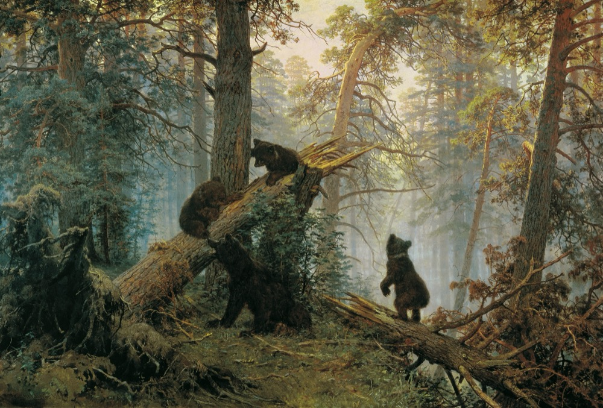
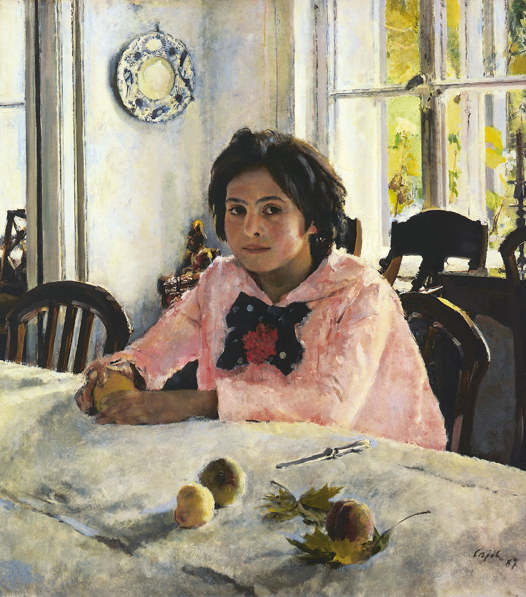
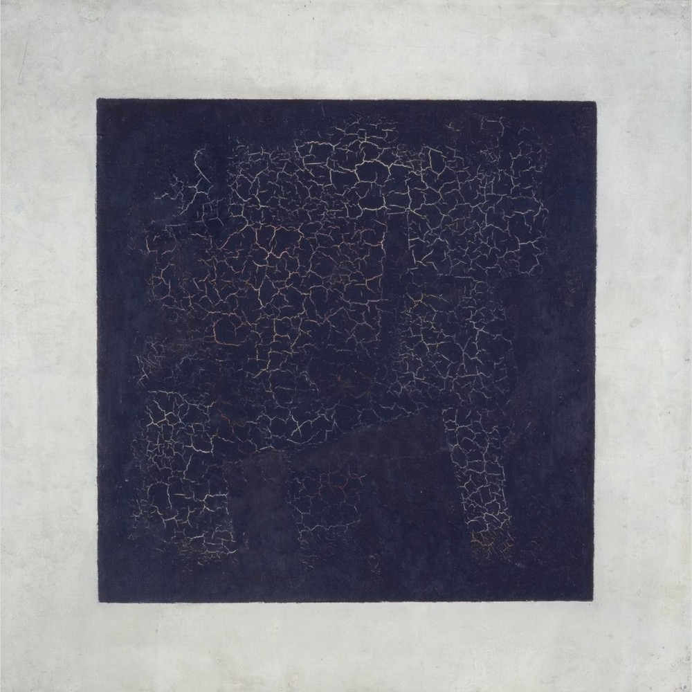
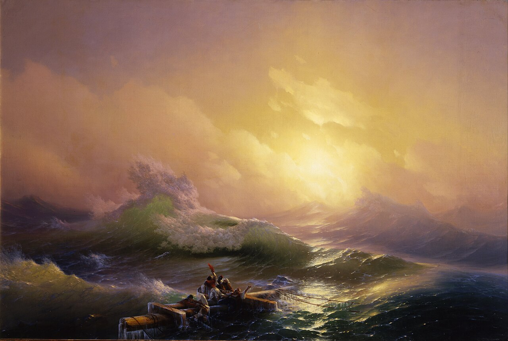

You walked through the whole unit today — writers, composers, painters, ballet and street music. Tonight: the dictation, two exam tasks, and your writing for tomorrow. 30–40 minutes, then rest.
You saw them today. Uncover each card only after you remember the title, the Russian name and the painter.




These eleven expressions live inside the dictation below — meet them first: his paintings are very realistica portrait painterto paint abstract picturesthe difficulties and everyday liveson a white backgroundit was worth over $60 millionscenes from his life and his dreamsfull of bright coloursa realistic depiction of the seagloomy and depressinga masterpiece of Russian art
Type, check yourself, and only then move on. Articles («the») are optional; spelling is not.
…and the words from today's texts — one word fills each gap:
The project: top Russian composers popular in Zetland. The survey question: What is your favourite Russian composer?
Sergey Rachmaninov — 34 · Pyotr Chaikovsky — 26 · Igor Stravinsky — 22 · Dmitry Shostakovich — 11 · Modest Musorgsky — 7
The plan: an opening statement · 2–3 facts · 1–2 comparisons + comments · a problem while learning to play a musical instrument + a solution · your opinion on the importance of classical music in our lives.
Write it on paper — 200–250 words. You have the bricks: the opening you know, «the figure for … is higher than that for …», «It could be explained by the fact that…», «To solve this problem…».
The plan: explain the choice of the photos (describe + differences) · advantages (1–2) of the two types of images · disadvantages (1–2) · which image you would like to hang in your bedroom, and why.
Prepare it aloud — 3 minutes, 12–15 sentences. Use today's frames: The main difference between the photos is that they depict… · Speaking of… · As for… · The biggest drawback of…
You said these today. Find the one word that is wrong — type the correct one.
Task 37 — the email to Jill (FROM: Jill@mail.uk · SUBJECT: My visit to Moscow). She asks: how to get to your apartment from the airport · the best means of transport (she'd prefer the one that isn't too expensive!) · the weather when she gets there. You ask 3 questions about her plans. 100–140 words.
Task 38.2 — the essay: how long Netland teenagers sleep on weekdays. The survey «How long do you sleep on weekdays?»: 5–6 hours — 33% · 6–7 hours — 31% · 4–5 hours — 25% · 7–8 hours — 8% · 8–9 hours — 3%. The plan: opening · 2–3 facts · 1–2 comparisons · a problem from lack of sleep + a solution · your opinion on the importance of sleep for teenagers' health. 200–250 words.
Copy the invented name exactly — «Netland».